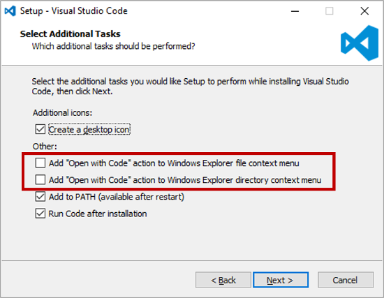
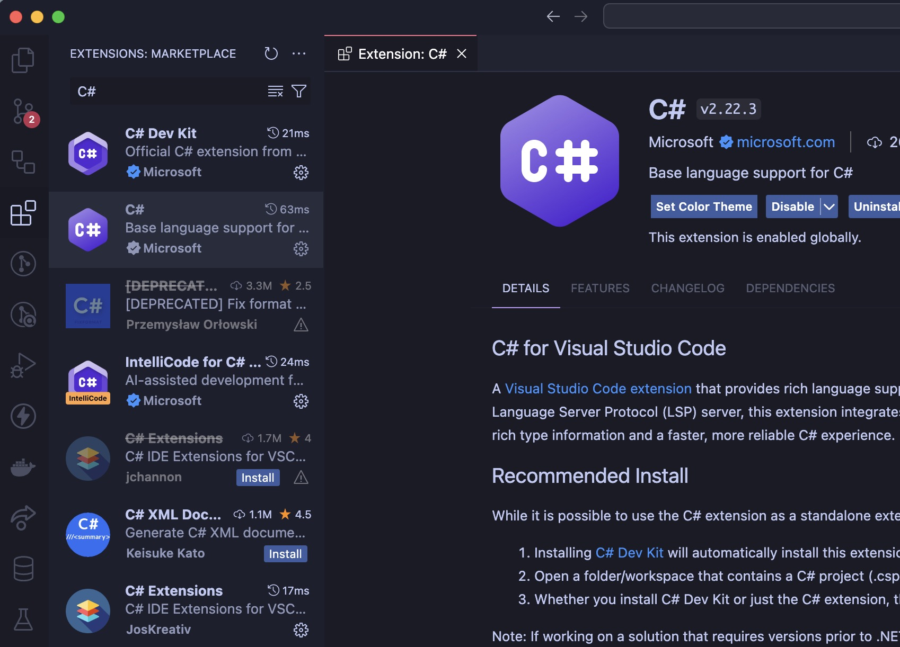
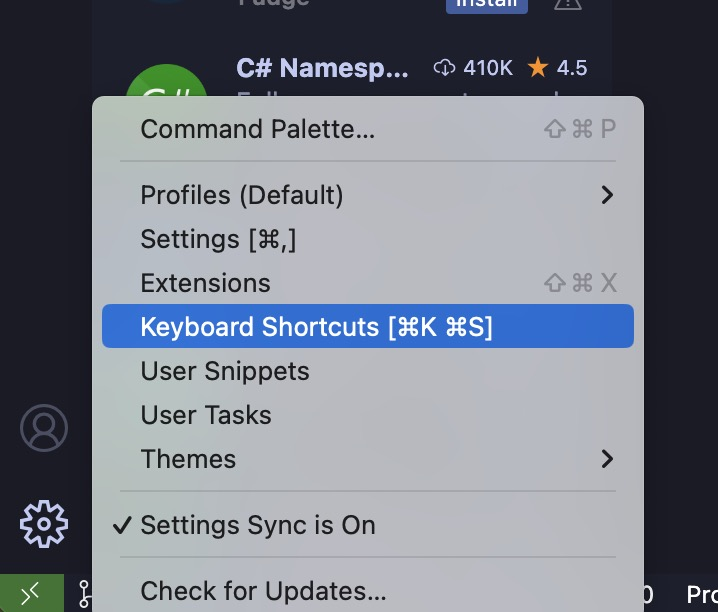
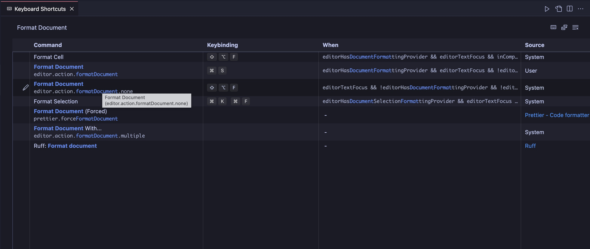

C# for Visual Studio Code
Introduction
This guide will help you set up your development environment for C# using Visual Studio Code. It will guide you through the installation of the .NET SDK, Visual Studio Code, and the C# extension for a complete setup.
Install .NET SDK
The .NET SDK is a free, open-source development platform for building many different types of applications. It includes the C# compiler, the .NET runtime, and the ASP.NET Core runtime.
- Download the .NET SDK installer from the official website.
- Run the installer and follow the instructions.
- Once installed, open a new terminal and run the following command to verify the installation:
dotnet --version
Install Visual Studio Code
Visual Studio Code is a free source code editor developed by Microsoft for Windows, Linux and macOS. It includes support for debugging, embedded Git control, syntax highlighting, intelligent code completion, snippets, and code refactoring.
Download the Visual Studio Code installer from the official website.
Run the installer and follow the instructions (Consider adding
Open with Codeaction to Windows Explorer context menu).

Once installed, open Visual Studio Code.
Click on
File>Auto Saveto enable the auto-save feature.
Install the C# extension
The C# extension for Visual Studio Code adds support for C# to Visual Studio Code, including features such as syntax highlighting, IntelliSense (code completion), and debugging.
Find them here:

The extensions to install are:
Bonus: Developer Tools
The following extensions are not required but can be useful:
Open a terminal and run the following command to install CSharpier (code formatter):
dotnet tool install --global csharpier
Then, open KeyboardShortcuts:

Search for Format Document and set the keybinding to Ctrl+S (or Cmd+S on MacOS)

Finally, open a C# file and press Ctrl+S (Cmd+S on MacOS) to format the document.
Resources
Have a question, give a feedback or found a bug? Feel free to open an issue or start a discussion on the GitHub repository.